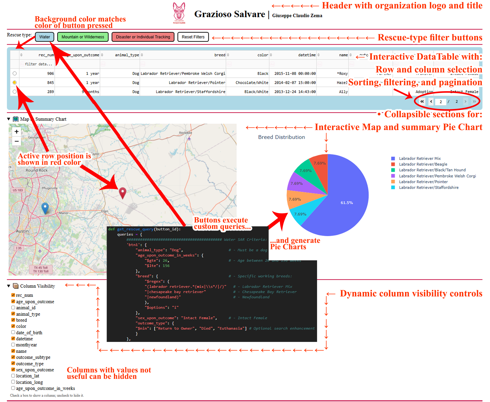
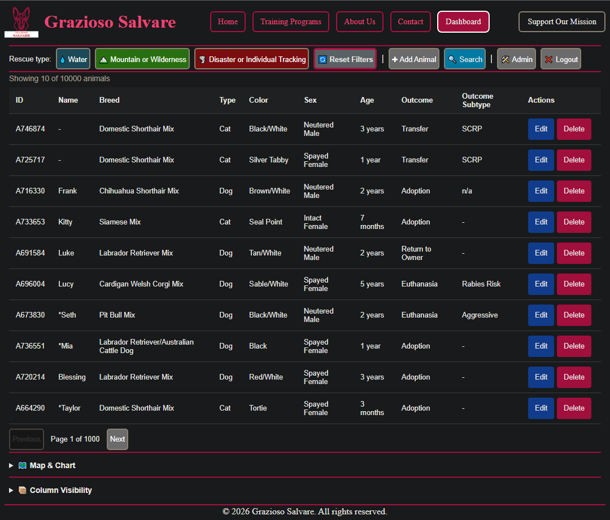
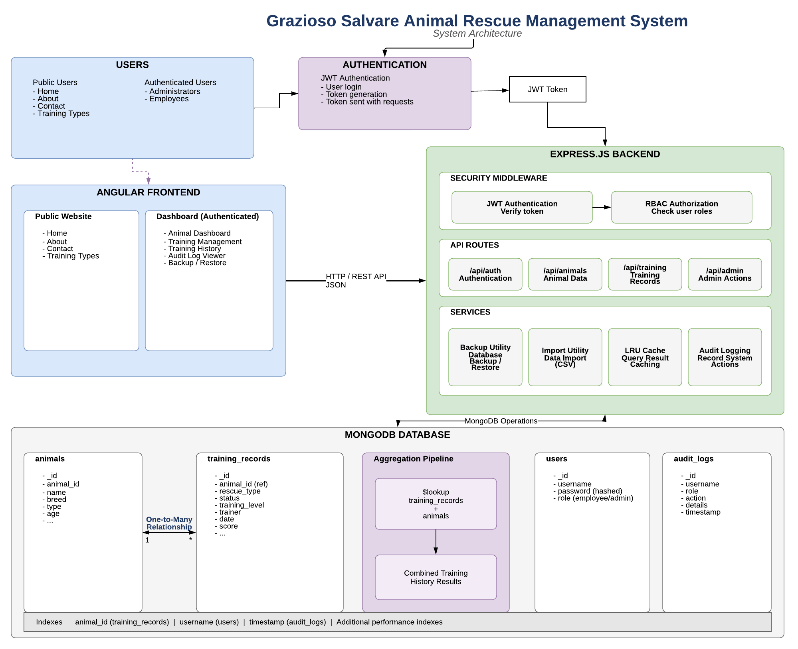

Capstone Project
The artifact selected for my CS-499 Capstone Project is the Grazioso Salvare Animal Rescue Dashboard originally developed during CS-340: Client/Server Development.
The original application was a Python-based dashboard that connected to a MongoDB database containing animal shelter records. The application allowed users to search, filter, and visualize animal rescue data through an interactive dashboard interface.

Skills Demonstrated
- MongoDB schema validation
- Database normalization
- One-to-many relationship design
- Aggregation pipelines with
$lookup - Role-based access control (RBAC)
- Database administration

Enhanced Artifact
The enhanced version transformed the original dashboard into a modern full-stack web application using the MEAN stack:
- MongoDB database
- Express.js REST API
- Angular frontend application
- Node.js backend services
- JWT authentication
- Role-based authorization
The enhanced application improves maintainability, security, scalability, and user experience while demonstrating advanced software engineering practices.

Enhancement Categories
Software Design & Engineering
The application architecture was redesigned using a full-stack MEAN approach. Additional improvements included authentication, route guards, API design, and automated testing.
View EnhancementAlgorithms & Data Structures
Performance improvements were implemented through database indexing, aggregation pipelines, server-side pagination, and an LRU caching strategy.
View EnhancementDatabase Design
Database improvements include advanced MongoDB features, validation, optimization techniques, and improved data management practices.
View EnhancementArtifact Resources
The original and enhanced project versions, supporting documentation, and demonstration materials are available below.